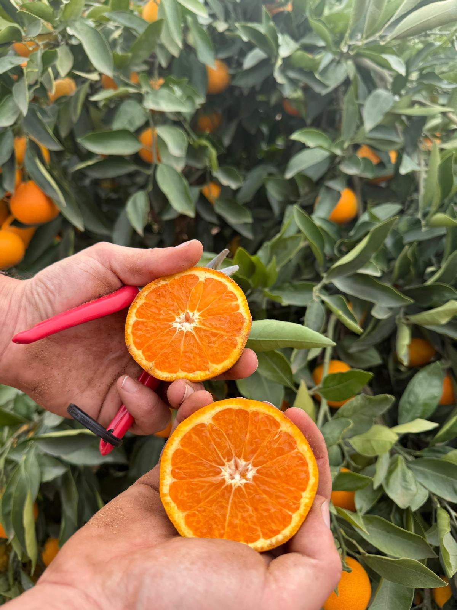
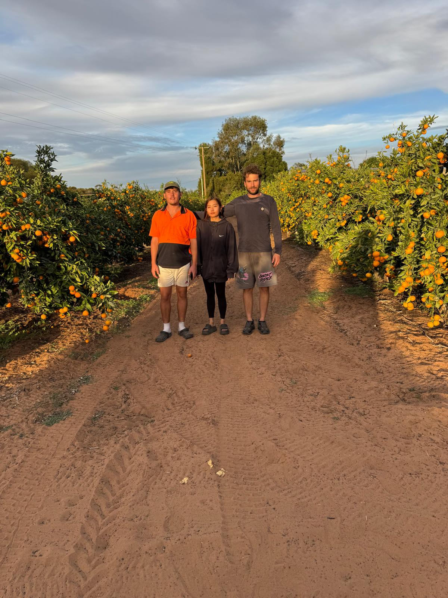

This week in Melbourne
The variety
Miho is an heirloom satsuma mandarin from Japan, prized for its low acid, high sugar balance. It is properly juicy, easy to peel, and seedless — the kind of mandarin that converts people who think they don't like mandarins.

“Sweetest, seedless, pesticide free — tasting is believing.”
Pop your email in. Every Monday morning we send one short note with all our Melbourne stops — shopping centres, farmers markets, and what's ripe at the farm.
One email a week. Unsubscribe anytime. We never share your email.
Or follow along:

The farm
We grow our mandarins on a small organic family farm in Colignan, just outside Mildura in north-west Victoria. The trees are irrigated from the Murray River and ripen under proper outback sun.
Everything is picked by hand the day before we drive to Melbourne, so what you buy at the stall today was on the tree yesterday. No cold storage, no waxing, no in-between.